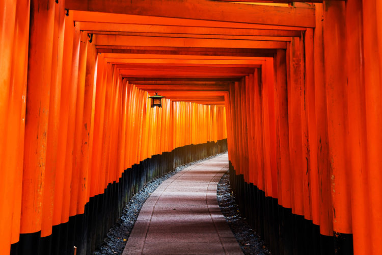
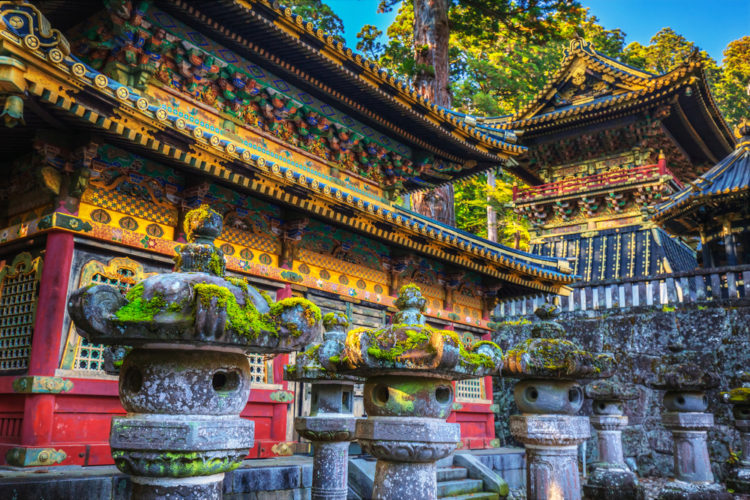
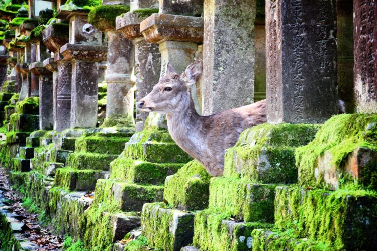

Главная страница | Исландия | Италия | Норвегия
Несмотря на то, что Японские острова начали заселяться много тысячелетий назад, государственность в Японии начала складываться лишь в IV-VI веках нашей эры. История возникновения Японии и её развитие до VI века спорна, так как до введения китайского языка у японцев не было письменности и соответственно не сохранились какие-либо достоверные свидетельства.Прародителями японской народности принято считать племя Ямато, которое проживало на территории Японских островов со второго века до нашей эры, также есть версия, что в III веке нашей эры, клан Ямато подчинил себе большинство племен Японии, с чего и пошел отчет зарождения японской народности.
Государство общей площадью 377,4 тыс. кв.км, находится в Восточной Азии, расположено на 4 крупных островах (Кюсю, Сикоку, Хонсю и Хоккайдо), островах Рюкю и более чем 4 тыс. мелких островов. На севере омывается Охотским морем, на востоке – Тихим океаном, на юге – Тихим океаном и Восточно-Китайским морем, на западе – Корейским проливом и Японским морем.Рельеф страны преимущественно гористый, достаточно сильно расчлененный. Многочисленны действующие и потухшие вулканы, в том числе высшая точка Японии — вулкан Фудзияма (3776 м). Береговая линия изрезана многочисленными бухтами и заливами. Часты землетрясения.
Центральная Япония отличается мягкой солнечной зимой и снег быстро тает. На юге температура всегда плюсовая и снега не бывает. Климат мягкий. Температура днем больше 10 градусов по Цельсию, солнце. В конце марта начинается цветение сакуры, а потом - абрикосового дерева. В апреле все расцветает. В мае температура днем в солнечную погоду может доходить до 30 градусов. Наступает в июне с приходом сезона дождей (3-4 недели). Очень высокая влажность и температура воздуха более 30 градусов. С июля устанавливается жаркая погода с непродолжительными осадками (влажность высокая). Сезон тайфунов в Японии начинается в середине лета и заканчивается в октябре. Основной удар на себя принимают острова Кюсю и Сикоку, но и Токио не застрахован.В это время преобладает сухая теплая погода. Увеличивается разница между дневной и ночной температурой. Так, например, днем температура может доходить до 30 градусов (в сентябре), а ночью опускаться до 10. В ноябре листья клёнов, покрывающих горы, делают горы похожими на пестрый ковер.
|
Блюдо |
Описание |
Фотография |
|---|---|---|
Соба |
Соба — национальное японское блюдо в виде длинной коричнево-серой лапши из гречневой муки. В Японии соба очень популярна как фастфуд, хотя её также готовят в очень дорогих ресторанах и дома. Подаётся чаще всего к столу охлаждённой без бульона, с соусом цую в специальной чашке, а иногда с горячим бульоном в качестве супа-лапши. |
|
Фугу |
Фугу — совершенно особый деликатес, который довольно знаменит почти во всем мире. Сама по себе фугу представляет собой рыбу, у которой ядовито почти все, кроме мяса. Причем яд этой рыбы способен почти мгновенно убить человека. |
|
Тофу |
Тофу — это соевый творог, диетическое блюдо, занимающее в жизни японцев довольно важное место. Блюдо это пришло в Японию из Китая. Тофу обладает целым рядом полезных свойств, также он прекрасно подходит людям с любыми заболеваниями желудка. Из этого творога в Японии готовят огромное количество блюд. В основном это разнообразные супы, сделанные на основе бульона мисо, который варится как раз из этого самого тофу. |
Одним из исторических символов Японии считается Храм Фусими-Инари или Святилище из тысячи алых ворот, посвященное богине рисового плодородия. Грандиозные тоннели с порталами, предназначенными для богов, создавались, согласно верованию синтоизма. Японцы считают, что посещение Храма Фусими-Инари приносит успех и процветание.
Живописная бамбуковая роща из тысяч высоких вечнозеленых деревьев – визитная карточка префектуры Киото. Среди городской инфраструктуры удивительно видеть такое зеленое чудо. Ровные стволы деревьев леса Сагано занимают территорию в 16 квадратных километров. Заповедная зона туристического района Арасияма находится под защитой ЮНЕСКО. Бамбуковый лес – это то, что посетить в Японии стоит обязательно.
Синтоистское святилище Тосёгу – главный архитектурный памятник в Никко. Посвящено святилище сёгуну Токугава Иэясу. Это самая яркая фигура в японской истории, поскольку при нем фактически завершилось объединение Японии в единое государство. Храм Тосёгу поражает красотой линий и пышной резьбой, авторство которой приписывают известному скульптору Хидари Дзингоро.
Достопримечательности Японии – это не только храмы и замки, но и целые города. К одним из них относится Нара или Город Оленей – кладезь архитектурных памятников и шедевров культуры и искусства. Около 1600 оленей свободно разгуливают по улицам прекрасного города. Говорят, что первый император Японии спустился с небес на оленьей упряжке. В 6-7 веках город Нара был первой столицей страны.
